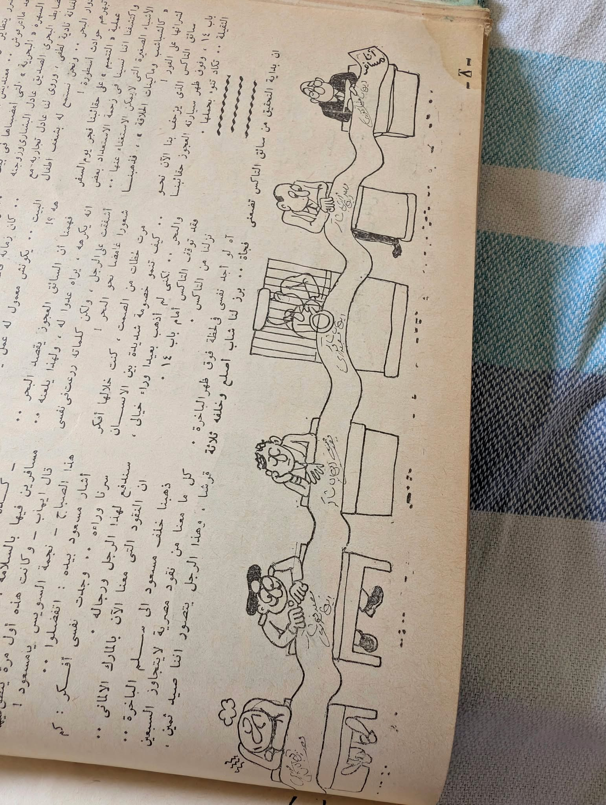

Begin with
the whole.
The supplied photograph shows a printed page arranged around several color fields. Drawn scenes and captions change scale from one panel to another. This is the first fact of its composition: the page, rather than any one cropped scene, is the unit we encountered.
The color blocks invite a path through the sheet, but that path is an interpretation. The original reading order, publication and authorship are not established by the image alone.
Keep the page visible while following a detail.
A layout with several tempos.
Yellow, pink, orange and pale blue give the visible panels separate places. Fine line drawings and compact Arabic captions sit inside those fields. A digital reading surface can preserve that visual rhythm while making each panel easier to inspect.

- SheetFull photographic object, always reachable.
- PanelsVisible colored regions, described rather than silently extracted.
- TextOriginal Arabic remains part of the source; transcription requires review.
The edge changes the story.
Other supplied pages use marginal drawings as a second voice alongside running text. The illustration does not float free of its page. Here the relation between visual margin and text is the useful pattern to carry into Kayffa: a narrow art spine beside a calm reading column.

A street inside a window.
The source-informed drawing keeps the arched enclosure, window grid and small street figures as a bounded illustration. The photographed page remains the source.
The source photograph is shown here as received. A corrected reading orientation can be offered as a view control while the unrotated file remains available.
Continue by relationship.
These are adjacent supplied objects, not proven items from the same publication. The shelf makes the visual connection explicit and leaves bibliographic linkage pending review.